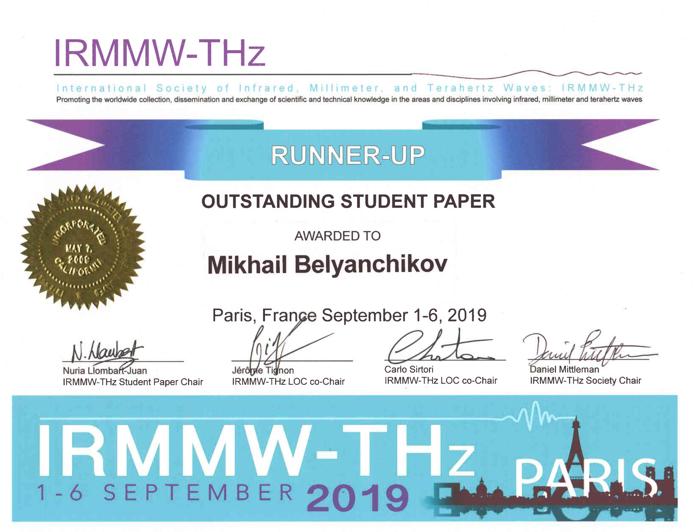
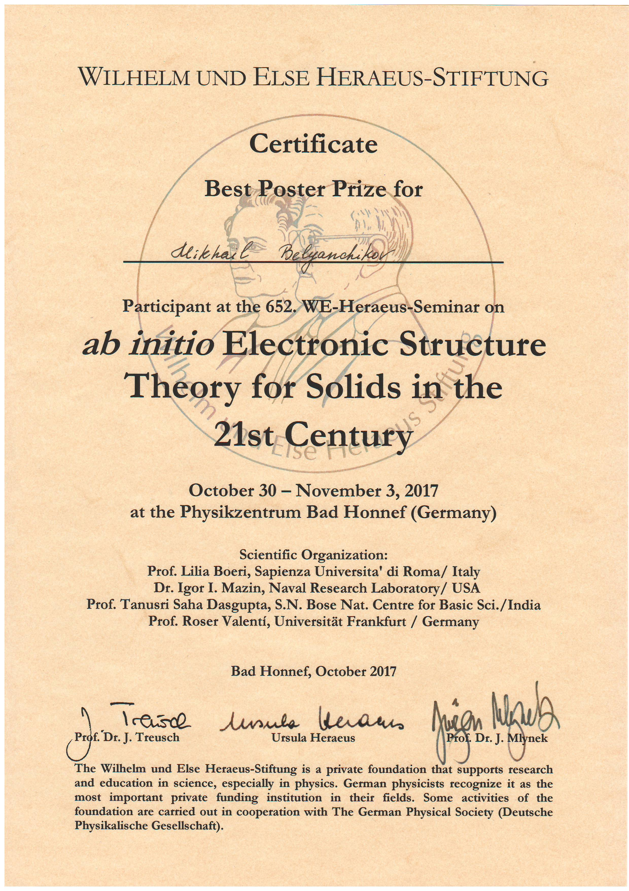
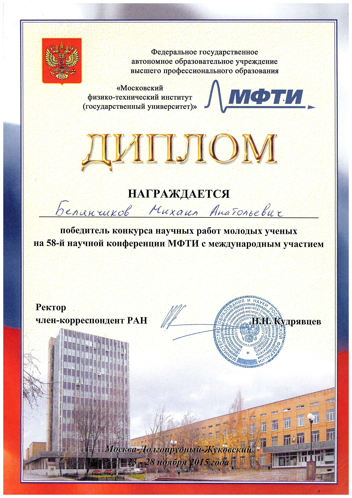

|
44th International Conference on Infrared, Millimeter,
and Terahertz Waves (IRMMW-THz 2019) |
 |
8th Russia-Japan-USA-Europe Symposium on Fundamental & Applied
Problems of Terahertz Devices & Technologies
Terahertz dynamics of a network of nanoconfined electric dipoles; talk
July 8-11, 2019 IPM RAS, Nizhny Novgorod, Russia proceedings
International Workshop WaterX: exotic properties of water under
extreme conditions
Ferroelectricity of nanoconfined water molecules. Novel type of
ferroelectric relaxors; talk
Relaxor behavior and ferroelectricity of nanoconfined water molecules.
Experiment and modeling; poster
June 3-8, 2018 La Maddalena Island, Italy website
2018 ISAF-FMA-AMF-AMEC-PFM Joint Conference (IFAAP 2018)
Ferroelectricity of nanoconfined water molecules; poster
May 27- June 1, 2018 Hiroshima, Japan website
|
652. WE-Heraeus-Seminar: Ab-initio Electronic Structure
Theory for Solids in the 21st Century |
 |
III International Conference on Laser&Plasma researches and
technologies – LaPlas-2017
Single-particle and collective states of water molecules in the matrix
of beryl crystal lattice; talk
January 24-27, 2017 NRNU MEPhI, Moscow, Russia website
XXII Polish-Czech Seminar Structural and Ferroelectric Phase
Transitions
Single-particle and collective states of water molecules in the matrix
of beryl crystal lattice: experiment and theory; talk
May 16-20, 2016 Hucisko, Poland website
|
58th MIPT Scientific Conference |
 |
4th Russia-Japan-USA Symposium on Fundamental & Applied
Problems of Terahertz Devices & Technologies
Terahertz dynamics of pseudoscalar modes in low-symmetry
ferroelectrics and amino acids; talk
June 9-12, 2015 IMT, ISSP, Chernogolovka, Russia website
{kind=link}
{kind=link}
{kind=link}